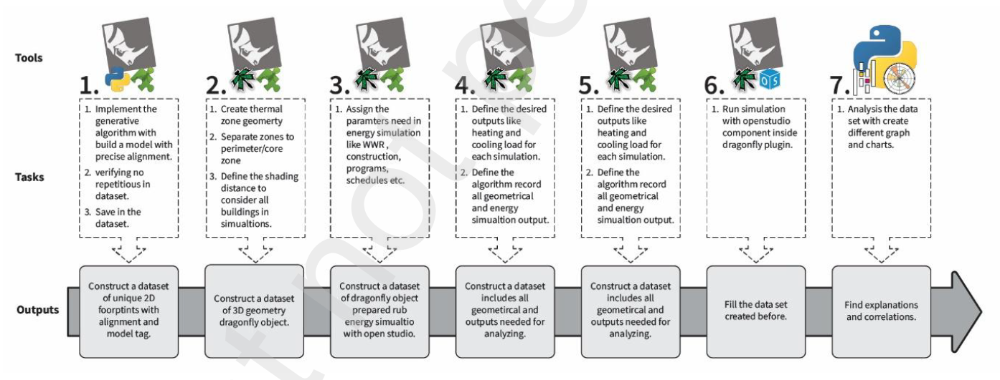
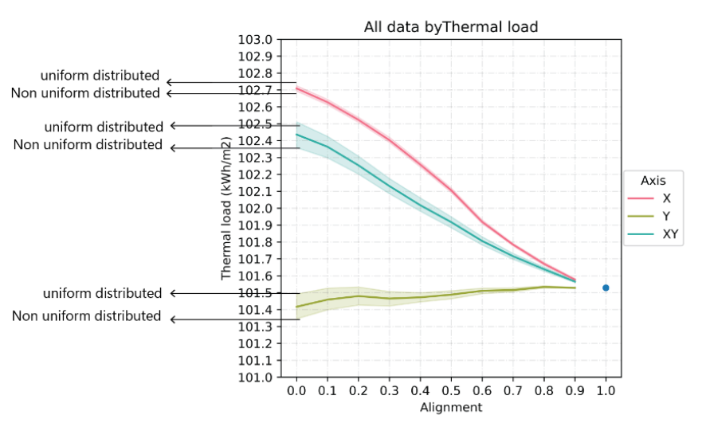

Direction matters
X, Y, and combined misalignment do not produce the same heating and cooling trends.
Master’s research / Urban building energy
A parametric study of how the alignment and distribution of buildings quietly reshape block-level energy demand.
If building size and specifications stay fixed, can the arrangement of the block still change its energy demand?
The study generated controlled alignment families along X, Y, and XY axes, simulated them under identical conditions, and compared heating, cooling, and primary energy.
Alignment is usually discussed as a visual property of urban form. This research reframed it as a normalized geometric variable that can be generated, compared, and related to performance.
Three model families tested misalignment along one or both axes while keeping footprints, height, envelope, schedules, and total floor area constant.
Translate point-and-line alignment concepts into a block-scale geometric measure.
Create X, Y, and XY families with uniform and non-uniform distributions.
Run controlled heating, cooling, thermal-load, and primary-energy evaluations.
Read trendlines per axis instead of forcing one universal alignment rule.

X, Y, and combined misalignment do not produce the same heating and cooling trends.
Layouts with the same alignment value can perform differently when their offsets are distributed differently.
Potential reductions reached about 1.25% for heating, 3.1% for cooling, and 2.42% for primary energy.
Regular and visually ordered arrangements were not automatically the most energy-efficient alternatives.
The study isolates alignment deliberately. Its results should be read as evidence that layout is consequential, not as a universal prescription for every climate, density, programme, or urban context.

The project opened several later questions — contextual influence, shadow distance, WWR, geometry metrics, and climatic form-finding. Those are related research lines, but they are not presented here as if they were one experiment.
Hossein Nazari with Abbas Tarkashvand and Mohsen Faizi, Iran University of Science and Technology.